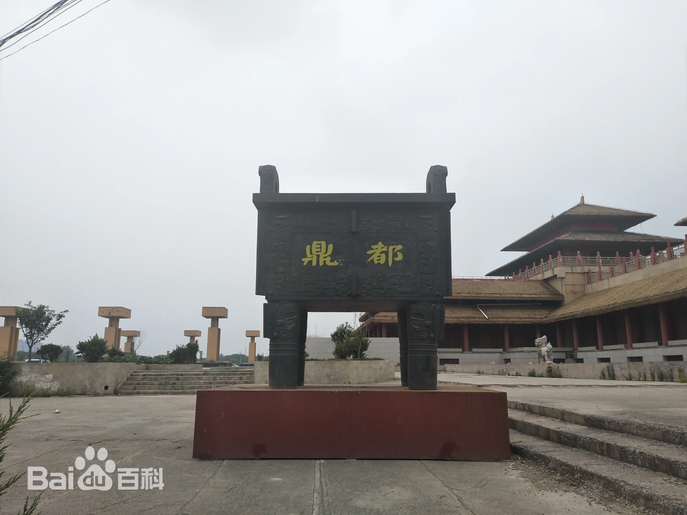
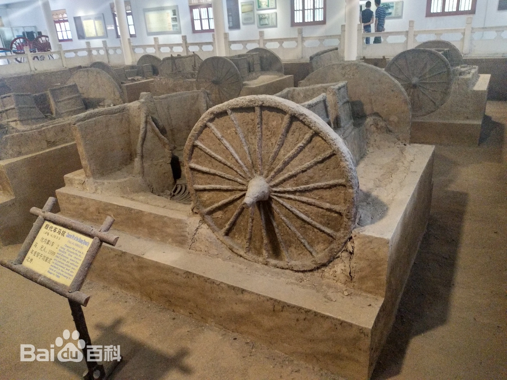
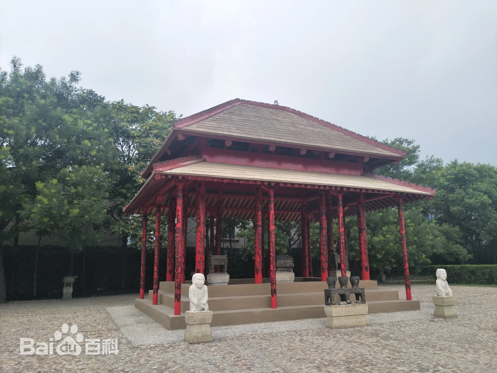

殷墟宫殿宗庙遗址



遗址简介
宫殿区驰名中外，为世界文明古国中占有重要地位。50余座宫殿、宗庙遗址，宏伟壮观，遗址出土了大量的甲骨文、青铜器，玉石器等珍贵文物。据考古专家评价，殷墟“发掘着一个典型的奴隶社会”。殷商文化具有“都市、文字和青铜器三个要素”，“是一个灿烂的中国文明”。
殷墟宫殿区
殷墟宫殿区驰名中外，为世界文明古国中最著名的“古典城邦”之一。50余座建筑遗址分“宫殿、宗庙、祭坛（甲、乙、丙）”三组，宏伟壮观。另外还发现铸铜遗址等。宫殿区出土大量的甲骨文、青铜器、玉器、宝石器等珍贵文物。殷墟文物有的是华夏之最，有的是世界之冠，蕴藏着殷代先民们的创造、智慧和技能。考古专家评价，殷墟“发掘着一个典型的”。具有“都市、文字和青铜器三个要素”。“是一个灿烂的中国文明”。著名历史学家郭沫若先生赋诗云：“洹水安阳名不虚，三千年前是帝都。”“中原文化殷创始，”“观此胜于读古书”。1991年江泽民主席视察该苑时指出：“这个地方学问很深，很有发展前途。”
核心特色
殷墟国家考古遗址公园规划涵盖整个保护区，总投资150亿元，采用VR、AR技术展示遗址，建成殷墟博物馆新馆并开发甲骨文数字藏品。遗址现存甲骨窖穴YH127坑出土刻辞甲骨17096片，记录商王武丁时期祭祀、田猎等内容